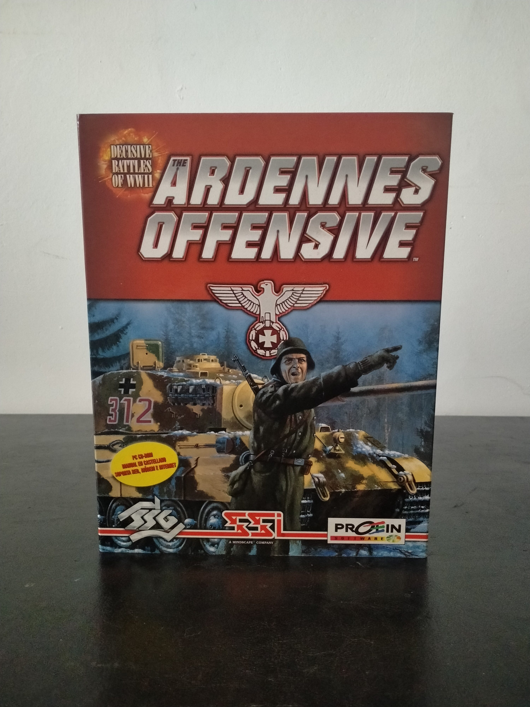

Ficha #000052
Decisive Battles of WWII: The Ardennes Offensive
Decisive Battles of WWII: Ardennes Offensive es un wargame estratégico ambientado en la ofensiva de las Ardenas de diciembre de 1944 durante la Segunda Guerra Mundial. Desarrollado por Strategic Studies Group, el título forma parte de la serie Decisive Battles of WWII y destaca por su enfoque operacional detallado, la gestión logística y la simulación táctica basada en hexágonos. El juego permite controlar fuerzas alemanas o aliadas en uno de los enfrentamientos más importantes del frente occidental, incorporando condiciones climáticas, líneas de suministro y mecánicas avanzadas de mando. Esta edición española distribuida por Proein incluye versión localizada al castellano y soporte para Windows 95.
- Formato
- Big Box
- Plataforma
- Win95
- Género
- Estrategia por turnos Wargame Simulación bélica Estrategia histórica
- Serie
- Todos Big Box
- Desarrollador
- Strategic Studies Group
- Distribuidor
- Mindscape, Proein
- EAN
- —
Contenido de la edición
- Manual
- CD-ROM
Preservación
- Protección
- Verificación de CD
- Formato recomendado
- BIN/CUE
- Jugable en virtualización
- Sí
La preservación puede realizarse mediante imagen BIN/CUE del CD-ROM original. El juego suele ejecutarse correctamente en sistemas virtualizados compatibles con Windows 95.